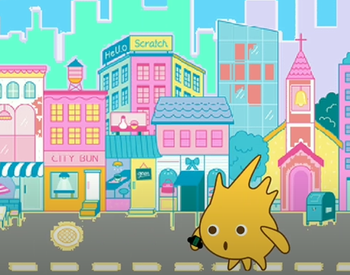
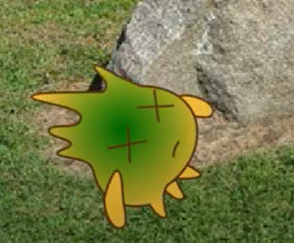

Gobo Gobo, a yellow football type character who is yellow in color and has brown eyes and outline. Gobo has a very calm nature. He doesn't show any anger or something. He has attempted several adventurous things like travelling future. Gobo has no neck (sadly) and never rages and beats someone.However, He gets beaten by others for very dumb reasons like eating someones candy or something as he likes it. Gobo is dumb at math too and cannot solve simple equations like (0 + 0). Even you cannot also solve :P. Gobo has three legs for some reason, you may ask to Scratch Team for that as they have made the costume of Gobo.Gobo was going to be Scratch's Mascot but later replaced by Scratch Cat for some reason. Gobo has friends like Pico and Nano. And you too are also his friends and me too! Gobo has appeared least in my videos and mostly like "Gobo travels future" and "Umm, Gobo?" videos


Gobo went in futureGobo died after drinking wrong potion
Gobo is very uneducated and was expelled from school. His maths can be terrible sometimes but he rarely answers and of them correct. Gobo is very famous for being second mascot of Scratch. Even Gobo has a scratch account!. Gobo enjoys with everyone and he likes to make friends. Apart of making friends he also likes to watch TV shows and cartoons, eat candies and foods and adventure (ofc). Even though is very uneducated, he even tried to teach people of making a cloth wet in my video "YouTube Tutorials be like".